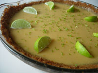

First Love: Comfort Food
Florida Key Lime PieIt's tart, it's sweet, it's creamy and it's cold. Key lime pie, made with the very sour limes common to Key West, Fla., is a distinctive dessert whose popularity is gaining on its better known cousin, the lemon meringue pie. With its unusual color, this lime custard dessert with a meringue finish is a masterful blend of tart and sweet that engages your taste buds and makes a memorable impression. A celebration of sun and citrus, this pie is as bold as a Florida sunset, and it's available by the slice. If you plan on making your own, try the recipe below. They're a great way to finish a summer dinner outdoors. Click here for the recipe! |
 |